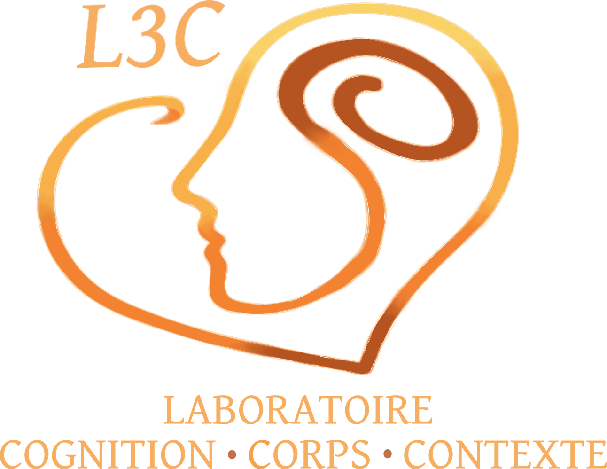

Co-Viewing and Emotional Synchrony in Older Adult Dyads: A Multimodal Exploratory Study
Delacourt, B., Raed El Aoun, M., Hidalgo, S., Vallet, G., Ansaldo, A.
Frontiers in Psychology, section Psychology of Aging
Université du Québec à Trois-Rivières
Le Laboratoire Cognition-Corps-Contexte (L3C), dirigé par Guillaume T. Vallet, Ph.D., étudie la psychologie humaine selon une approche incarnée et située de la cognition.

Le fonctionnement cognitif est intrinsèquement déterminé par les interactions entre une personne et son environnement. Les caractéristiques corporelles (capacités sensorielles et motrices, physionomie), l’état physiologique (fatigue, énergie), l’environnement immédiat (luminosité, bruit) et le contexte social (culture, stéréotypes) façonnent les pensées et les capacités de traitement de l’information.
Le vieillissement cognitif chez les adultes en santé et les personnes présentant des troubles cognitifs.
L’évaluation et la compréhension des démences et des troubles neurocognitifs.
L’adaptation cardiovasculaire comme marqueur du fonctionnement cognitif et levier d’intervention non pharmaceutique.
Les représentations de l’âge et l’effet du passage à la retraite sur la cognition.
Le laboratoire prône le respect, l’ouverture et la rigueur. Ses recherches s’inscrivent dans une démarche éthique et intègre, et leurs résultats sont diffusés à la fois auprès de la communauté scientifique et du grand public, de manière ouverte et accessible. Une partie des études vise une application directe, avec des retombées sociales concrètes.
La collaboration est tout aussi essentielle, au sein de l’équipe comme avec des collègues d’ici et d’ailleurs. Le laboratoire cultive un environnement inclusif, où la diversité des idées est encouragée et celle des personnes respectée.
Co-Viewing and Emotional Synchrony in Older Adult Dyads: A Multimodal Exploratory Study
Delacourt, B., Raed El Aoun, M., Hidalgo, S., Vallet, G., Ansaldo, A.
Frontiers in Psychology, section Psychology of Aging
Heart Rate Variability Biofeedback and Implica:ons for Tinnitus, PTSD and Chronic Pain in Veterans: A Scoping Review
Mainville, M.-O., Lacasse-Rioux, E., Norena, A., Vallet, G. T., Fournier, P.
Frontiers in Audiology and Otology, section Tinnitus, 4, 1917408
Cognitive Dispersion in the Alzheimer's Disease Spectrum
Marsault, J.†, Vallet, G., Joubert, S.
Journal of the International Neuropsychological Society, 1-12
Do Visual Details Drive Memory? Role of the Visuo-Spatial Frequencies in Mnemonic Discrimination
Mille, J.†, Ramanoël, S., Vallet, G. T.
Quaterly Journal of Experimental Psychology
Laboratoire Cognition-Corps-Contexte
Département de psychologie, Université du Québec à Trois-Rivières
3351, boul. des Forges, Trois-Rivières (Québec) G8Z 4M3
l3c@uqtr.ca